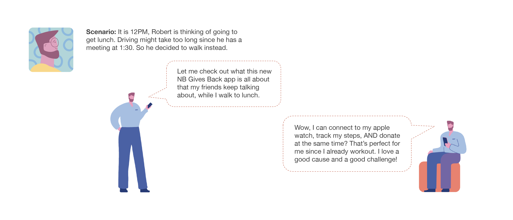
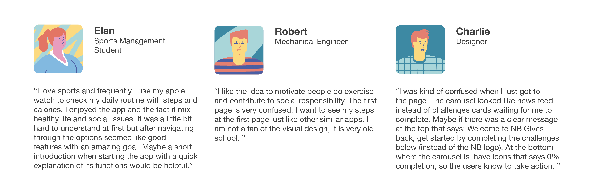

New Balance Gives Back

Overview&Problems
This is a student project, of which the purpose is to promote New Balance by any type of digital media. During the background reserach on New Balance, our team happens to discover the New Balance Gives Back program that is rarely known by New Balance current and potential customers. New Balance Gives Back is a program where New Balance commited to help deserving organizations raise awareness and funds for their causes. Our team sees the branding value of this program and proposed a mobile application idea to further strengthen NB’s public image as an social responsible company and promote New Balance’s propducts within the application as well.

Concept
NB Gives Back is designed to promote New Balance’s public reputation and shoe products
by encouraging people to walk/run more with donation credits as rewards.
Persona
User Journey

Wireframes

Interface Design
Final Product

Start with a challenge when you log in for the first time

Receive rewards and donate after you complete the challenge
View your friends ranking
Design Process


User Test

Design Interations
“It was a little bit hard to understand at first but after navigating through the options seemed like good features with an amazing goal. ” “I was kind of confused when I just got to the page. ” “Maybe if there was a clear message at the top that says: Welcome to NB Gives back, get started by completing the challenges below (instead of the NB logo). ”
Solution: Adding a short introduction at the landing page.


Reflection
This is one of the first design sprints I have ever worked on. My gains from the process of collaborating and practicing are fruitful. I would like to share my thoughts about a few different aspects.
Design Process
Having worked as a landscape designer before, I found the design process is very similar to what I have been trained. Just like what I did as a landscape designer, we started with researching and understanding the problems. Brainstorming and sketching ideas from different perspectives, narrowing down ideas, focus on fewer ideas and further develop them, making prototype, seeking for feed back, reiterating the design, the whole process is not new to me at all. As design that is related to people, landscape and UIUX both concern about how people will be interacting with our products. For landscape, it is how people feel and move in the physical spaces, while for UIUX of digital products, it is how people going to navigate though the digital contents. It is the functions and forms that are different. The cores of their processes are alike. So does their underlaying value, to serve people and offer them delightful experience.
Interface Design
When it comes to the interface design, I realized that my understanding of how styles of different elements and the arrangement of them affect people’s decisions is restricted by my limited experience so far. I am planning to do More case studies of different apps and UI design practices for my future study.
Gains from User Test
One thing I found significantly different between digital product design and landscape design is the user test part. In UIUX design, you can provide users with prototype that is very alike to the final products in terms of form and experience, from which you will be able to receive very effective feedbacks from users. Whereas in landscape design, it is costly to provide 1:1 prototype to people. Inevitably, the discrepancies between design representations and future constructed project in landscape design will cause different degrees of mis-perception and make the feedback less effective to the design iteration. I like how you are able to collect and utilize users’ feedback quickly and effectively at different stages of UIUX design, which made the whole design approach and final products user-centered.
Collaboration
One of the challenges we have on collaboration is the disagreement within our team on different ideas. I found the vote system mechanism from sprint methods quite effective in this case. However, discussion and debates are still unavoidable. Listening and understanding are critical. Bearing big picture and intention in mind when making group decisions helped us keep our project on track.
Design Process
Having worked as a landscape designer before, I found the design process is very similar to what I have been trained. Just like what I did as a landscape designer, we started with researching and understanding the problems. Brainstorming and sketching ideas from different perspectives, narrowing down ideas, focus on fewer ideas and further develop them, making prototype, seeking for feed back, reiterating the design, the whole process is not new to me at all. As design that is related to people, landscape and UIUX both concern about how people will be interacting with our products. For landscape, it is how people feel and move in the physical spaces, while for UIUX of digital products, it is how people going to navigate though the digital contents. It is the functions and forms that are different. The cores of their processes are alike. So does their underlaying value, to serve people and offer them delightful experience.
Interface Design
When it comes to the interface design, I realized that my understanding of how styles of different elements and the arrangement of them affect people’s decisions is restricted by my limited experience so far. I am planning to do More case studies of different apps and UI design practices for my future study.
Gains from User Test
One thing I found significantly different between digital product design and landscape design is the user test part. In UIUX design, you can provide users with prototype that is very alike to the final products in terms of form and experience, from which you will be able to receive very effective feedbacks from users. Whereas in landscape design, it is costly to provide 1:1 prototype to people. Inevitably, the discrepancies between design representations and future constructed project in landscape design will cause different degrees of mis-perception and make the feedback less effective to the design iteration. I like how you are able to collect and utilize users’ feedback quickly and effectively at different stages of UIUX design, which made the whole design approach and final products user-centered.
Collaboration
One of the challenges we have on collaboration is the disagreement within our team on different ideas. I found the vote system mechanism from sprint methods quite effective in this case. However, discussion and debates are still unavoidable. Listening and understanding are critical. Bearing big picture and intention in mind when making group decisions helped us keep our project on track.